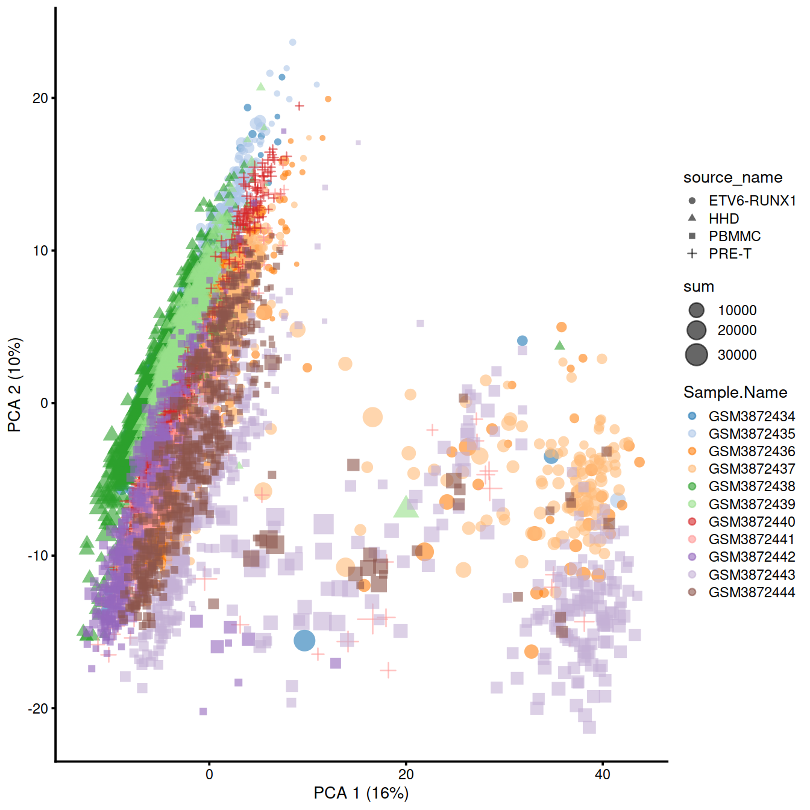
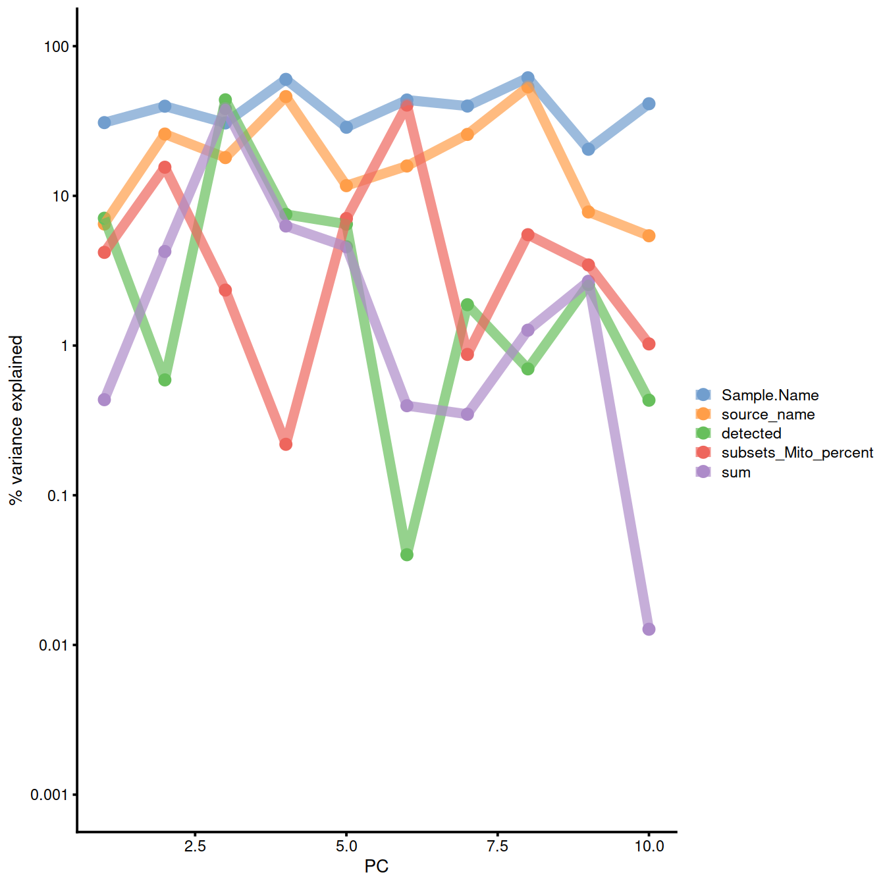
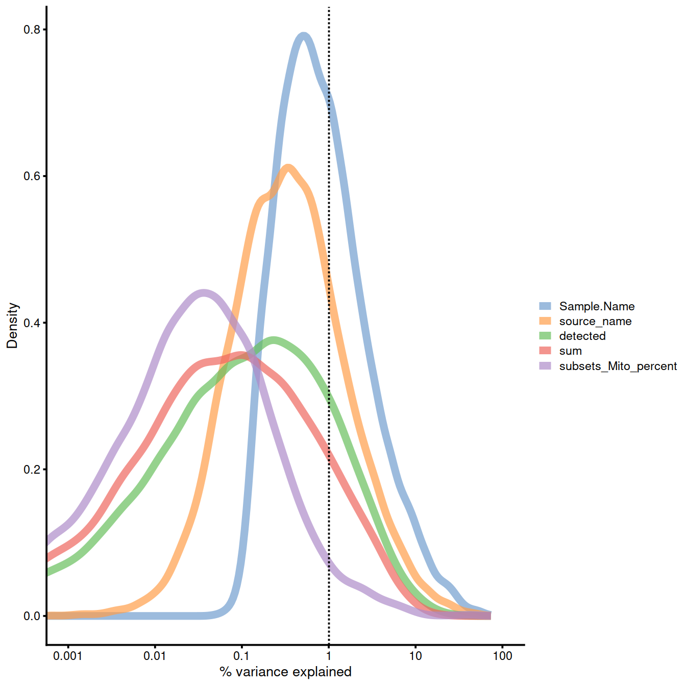

Chapter 10 Identifying confounding factors - Caron set
normPlotDirBit <- "Plots/Norm" # "ConfoundPlots"
#setNameUpp <- "Caron"
#setNameLow <- "caron"
setName <- tolower("Caron")
setSuf <- "_5hCellPerSpl"
typeNorm <- "scran"
projDir <- params$projDir
dirRel <- params$dirRel
outDirBit <- params$outDirBitcaron
10.1 Load object
# Read object in:
tmpFn <- sprintf("%s/%s/Robjects/%s_sce_nz_postDeconv%s.Rds",
projDir, outDirBit, setName, setSuf)
tmpFn## [1] "/ssd/personal/baller01/20200511_FernandesM_ME_crukBiSs2020/AnaWiSce/Ana1/Robjects/caron_sce_nz_postDeconv_5hCellPerSpl.Rds"## class: SingleCellExperiment
## dim: 16629 5500
## metadata(0):
## assays(2): counts logcounts
## rownames(16629): ENSG00000237491 ENSG00000225880 ... ENSG00000275063
## ENSG00000271254
## rowData names(11): ensembl_gene_id external_gene_name ... detected
## gene_sparsity
## colnames: NULL
## colData names(16): Barcode Run ... cell_sparsity sizeFactor
## reducedDimNames(0):
## altExpNames(0):10.2 PCA
Remember scran PCA:
Normalised counts are stored in ‘logcounts’ assay
PCA plot for the ‘scran’ counts in the caron set.
tmpFn <- sprintf("%s/%s/%s/%s_sce_nz_postQc%s_%sPca.png",
#projDir, outDirBit, normPlotDirBit, setName, setSuf, typeNorm)
dirRel, normPlotDirBit, setName, setSuf, typeNorm)
tmpFn
knitr::include_graphics(tmpFn, auto_pdf = TRUE)#options(BiocSingularParam.default=IrlbaParam())
options(BiocSingularParam.default=ExactParam())
qclust <- quickCluster(sce, min.size = 30, use.ranks = FALSE)
sce <- computeSumFactors(sce, sizes = 15, clusters = qclust)
sce <- logNormCounts(sce)Perform PCA:
reducedDim(sce, "PCA") <- reducedDim(
runPCA(sce, exprs_values = "logcounts", ncomponents = 10), "PCA")
plotPCA(
sce,
colour_by = "Sample.Name",
size_by = "sum",
shape_by = "source_name"
)
# on norm count https://biocellgen-public.svi.edu.au/mig_2019_scrnaseq-workshop/public/normalization-confounders-and-batch-correction.html#identifying-confounding-factors
# on logcounts_raw https://scrnaseq-course.cog.sanger.ac.uk/website/cleaning-the-expression-matrix.html#correlations-with-pcs
# a bit long
# issue with scale, trying with explanPc/100
# see next chunk too
explanPc <- getExplanatoryPCs(
sce,
exprs_values = "logcounts_raw",
variables = c(
"sum",
"detected",
"source_name",
"Sample.Name",
"subsets_Mito_percent"
)
)
plotExplanatoryPCs(explanPc/100) # on logcounts_raw
# https://biocellgen-public.svi.edu.au/mig_2019_scrnaseq-workshop/public/normalization-confounders-and-batch-correction.html#identifying-confounding-factors
plotExplanatoryVariables(
sce,
exprs_values = "logcounts_raw",
#exprs_values = "counts",
#exprs_values = "logcounts",
variables = c(
"sum",
"detected",
"source_name",
"Sample.Name",
"subsets_Mito_percent"
)
)10.3 Normalised counts
Correlation with PCs: logcounts (normalised):
# on norm count https://biocellgen-public.svi.edu.au/mig_2019_scrnaseq-workshop/public/normalization-confounders-and-batch-correction.html#identifying-confounding-factors
# on logcounts_raw https://scrnaseq-course.cog.sanger.ac.uk/website/cleaning-the-expression-matrix.html#correlations-with-pcs
# a bit long
colData(sce)$source_name <- factor(colData(sce)$source_name)
explanPc <- getExplanatoryPCs(sce,
#exprs_values = "logcounts", # default
variables = c(
"sum",
"detected",
"source_name",
"Sample.Name",
"subsets_Mito_percent"
)
)
plotExplanatoryPCs(explanPc/100) 
Explanatory variables: logcounts (normalised):
# on logcounts_raw
# https://biocellgen-public.svi.edu.au/mig_2019_scrnaseq-workshop/public/normalization-confounders-and-batch-correction.html#identifying-confounding-factors
plotExplanatoryVariables(
sce,
# exprs_values = "logcounts", # default
variables = c(
"sum",
"detected",
"source_name",
"Sample.Name",
"subsets_Mito_percent"
)
)
10.4 Session information
## R version 4.0.3 (2020-10-10)
## Platform: x86_64-pc-linux-gnu (64-bit)
## Running under: CentOS Linux 8
##
## Matrix products: default
## BLAS: /opt/R/R-4.0.3/lib64/R/lib/libRblas.so
## LAPACK: /opt/R/R-4.0.3/lib64/R/lib/libRlapack.so
##
## locale:
## [1] LC_CTYPE=en_GB.UTF-8 LC_NUMERIC=C
## [3] LC_TIME=en_GB.UTF-8 LC_COLLATE=en_GB.UTF-8
## [5] LC_MONETARY=en_GB.UTF-8 LC_MESSAGES=en_GB.UTF-8
## [7] LC_PAPER=en_GB.UTF-8 LC_NAME=C
## [9] LC_ADDRESS=C LC_TELEPHONE=C
## [11] LC_MEASUREMENT=en_GB.UTF-8 LC_IDENTIFICATION=C
##
## attached base packages:
## [1] stats4 parallel stats graphics grDevices utils datasets
## [8] methods base
##
## other attached packages:
## [1] Cairo_1.5-12.2 edgeR_3.32.1
## [3] DelayedArray_0.16.3 RColorBrewer_1.1-2
## [5] reticulate_1.18 purrr_0.3.4
## [7] tidyr_1.1.3 tibble_3.1.1
## [9] broom_0.7.6 leiden_0.3.7
## [11] cluster_2.1.0 dynamicTreeCut_1.63-1
## [13] bluster_1.0.0 fossil_0.4.0
## [15] shapefiles_0.7 foreign_0.8-80
## [17] maps_3.3.0 sp_1.4-5
## [19] clustree_0.4.3 ggraph_2.0.5
## [21] pheatmap_1.0.12 harmony_1.0
## [23] Rcpp_1.0.6 batchelor_1.6.3
## [25] SeuratObject_4.0.0 Seurat_4.0.1
## [27] limma_3.46.0 ggfortify_0.4.11
## [29] BiocSingular_1.6.0 scuttle_1.0.4
## [31] robustbase_0.93-7 mixtools_1.2.0
## [33] irlba_2.3.3 biomaRt_2.46.3
## [35] Matrix_1.2-18 igraph_1.2.6
## [37] DropletUtils_1.10.3 scater_1.18.6
## [39] ggplot2_3.3.3 scran_1.18.7
## [41] SingleCellExperiment_1.12.0 SummarizedExperiment_1.20.0
## [43] Biobase_2.50.0 GenomicRanges_1.42.0
## [45] GenomeInfoDb_1.26.7 IRanges_2.24.1
## [47] S4Vectors_0.28.1 BiocGenerics_0.36.1
## [49] MatrixGenerics_1.2.1 matrixStats_0.58.0
## [51] dplyr_1.0.5 DT_0.18
## [53] knitr_1.32
##
## loaded via a namespace (and not attached):
## [1] rappdirs_0.3.1 scattermore_0.7
## [3] R.methodsS3_1.8.1 bit64_4.0.5
## [5] R.utils_2.10.1 data.table_1.14.0
## [7] rpart_4.1-15 RCurl_1.98-1.3
## [9] generics_0.1.0 cowplot_1.1.1
## [11] RSQLite_2.2.6 RANN_2.6.1
## [13] future_1.21.0 bit_4.0.4
## [15] spatstat.data_2.1-0 xml2_1.3.2
## [17] httpuv_1.5.5 isoband_0.2.4
## [19] assertthat_0.2.1 viridis_0.5.1
## [21] xfun_0.22 hms_1.0.0
## [23] jquerylib_0.1.3 evaluate_0.14
## [25] promises_1.1.1 DEoptimR_1.0-8
## [27] fansi_0.4.2 progress_1.2.2
## [29] dbplyr_2.0.0 DBI_1.1.1
## [31] htmlwidgets_1.5.3 spatstat.geom_2.1-0
## [33] ellipsis_0.3.1 RSpectra_0.16-0
## [35] crosstalk_1.1.1 backports_1.2.1
## [37] bookdown_0.21 deldir_0.2-10
## [39] sparseMatrixStats_1.2.1 vctrs_0.3.7
## [41] ROCR_1.0-11 abind_1.4-5
## [43] cachem_1.0.4 withr_2.4.2
## [45] ggforce_0.3.3 sctransform_0.3.2.9005
## [47] prettyunits_1.1.1 goftest_1.2-2
## [49] segmented_1.3-3 lazyeval_0.2.2
## [51] crayon_1.4.1 labeling_0.4.2
## [53] pkgconfig_2.0.3 tweenr_1.0.2
## [55] nlme_3.1-149 vipor_0.4.5
## [57] rlang_0.4.10 globals_0.14.0
## [59] lifecycle_1.0.0 miniUI_0.1.1.1
## [61] BiocFileCache_1.14.0 rsvd_1.0.3
## [63] polyclip_1.10-0 lmtest_0.9-38
## [65] Rhdf5lib_1.12.1 zoo_1.8-9
## [67] beeswarm_0.2.3 ggridges_0.5.3
## [69] png_0.1-7 viridisLite_0.3.0
## [71] bitops_1.0-6 R.oo_1.24.0
## [73] KernSmooth_2.23-17 rhdf5filters_1.2.0
## [75] blob_1.2.1 DelayedMatrixStats_1.12.3
## [77] stringr_1.4.0 parallelly_1.24.0
## [79] readr_1.4.0 beachmat_2.6.4
## [81] scales_1.1.1 memoise_2.0.0
## [83] magrittr_2.0.1 plyr_1.8.6
## [85] ica_1.0-2 zlibbioc_1.36.0
## [87] compiler_4.0.3 dqrng_0.2.1
## [89] fitdistrplus_1.1-3 XVector_0.30.0
## [91] listenv_0.8.0 patchwork_1.1.1
## [93] pbapply_1.4-3 MASS_7.3-53
## [95] mgcv_1.8-33 tidyselect_1.1.0
## [97] stringi_1.5.3 highr_0.8
## [99] yaml_2.2.1 askpass_1.1
## [101] locfit_1.5-9.4 ggrepel_0.9.1
## [103] grid_4.0.3 sass_0.3.1
## [105] tools_4.0.3 future.apply_1.7.0
## [107] rstudioapi_0.13 gridExtra_2.3
## [109] farver_2.1.0 Rtsne_0.15
## [111] digest_0.6.27 shiny_1.5.0
## [113] later_1.1.0.1 RcppAnnoy_0.0.18
## [115] httr_1.4.2 AnnotationDbi_1.52.0
## [117] kernlab_0.9-29 colorspace_2.0-0
## [119] XML_3.99-0.5 tensor_1.5
## [121] splines_4.0.3 uwot_0.1.10
## [123] statmod_1.4.35 spatstat.utils_2.1-0
## [125] graphlayouts_0.7.1 plotly_4.9.3
## [127] xtable_1.8-4 jsonlite_1.7.2
## [129] tidygraph_1.2.0 R6_2.5.0
## [131] pillar_1.6.0 htmltools_0.5.1.1
## [133] mime_0.10 glue_1.4.2
## [135] fastmap_1.1.0 BiocParallel_1.24.1
## [137] BiocNeighbors_1.8.2 codetools_0.2-16
## [139] utf8_1.2.1 lattice_0.20-41
## [141] bslib_0.2.4 spatstat.sparse_2.0-0
## [143] ResidualMatrix_1.0.0 curl_4.3
## [145] ggbeeswarm_0.6.0 openssl_1.4.3
## [147] survival_3.2-7 rmarkdown_2.7
## [149] munsell_0.5.0 rhdf5_2.34.0
## [151] GenomeInfoDbData_1.2.4 HDF5Array_1.18.1
## [153] reshape2_1.4.4 gtable_0.3.0
## [155] spatstat.core_2.1-2